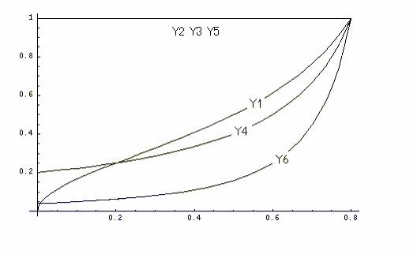
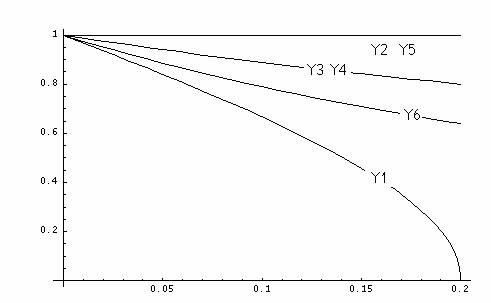
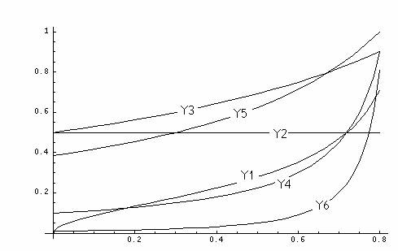

3-3-2-3-6-1 参考 いろいろなLinkage
Disequilibrium 指標とその挙動
Reference：Devlin
B and Risch N，A comparison of linkage disequilibrium measures for fine-scale
mapping．Genomics 29：311-322，(1995)
連鎖不平衡の程度を表現する指標として複数のものが提案されており、同一の2 SNPデータ間の関係を表現する場合にも、用いる指標により異なる値が得られる。主なものとしては、以下のように5つのLDの指標(Δ、D’、δ、d、Q )及び、d２を加えた計6つの指標が用いられる。
それぞれの指標の特徴をつかむために挙動を視覚化する。
要点としては、各指標の値が、
(1)完全連鎖のときにいつも１をとるか、否かの点、
(2)Allele
frequencyの影響をどのように受けるかという点、
(3)ローカス間の対称性があるか、否かの点、
の３点が主な相違点となる。
Haplotype
frequencyを以下のように表記する
|
Haplotype |
Frequency |
|
AB |
PＡＢ |
|
Ab |
PＡｂ |
|
aB |
PａＢ |
|
ab |
Pａｂ |
Pｘｘの条件としては
PＡＢ+Pａｂ+PａＢ+Pａｂ＝1
Min(Pｘｘ)＝PａＢ
とすることで、あらゆるパターンを網羅することとする。
全ての指標の計算式の分子(N：Numerator)は共通しており、それは
N＝PＡＢ×Pａｂ-PＡｂ×PａＢ
と書ける
このNを用いてそれぞれの指標を書き下すと
△ D’ δ d Q d２
＝N/SQRT((PＡＢ+PＡｂ)×(PａＢ+Pａｂ)×(PＡＢ+PａＢ)×(PＡｂ+Pａｂ))
＝N/Minimum((PＡＢ+PａＢ)×(PａＢ+Pａｂ),((PＡＢ+PＡｂ)×(PＡｂ+Pａｂ))
＝N/((PＡＢ+PａＢ)×Pａｂ)
＝N/((PＡＢ+PａＢ)×(PＡｂ+Pａｂ))
＝N/(PＡＢ×Pａｂ+PＡｂ×PａＢ)
＝(N/((PＡＢ+PａＢ)×(PＡｂ+Pａｂ)))２
となる。
また、組換え率θとの関係で、世代数nを用いておのおのの指標を書き表すと
△ D’ δ d Q
×(1/Pａｂ)×SQRT((PＡｘ/PｘＢ)×(1-PＡｘ)×(1-PｘＢ))＝(1-θ)ｎ
×(1+Pａｂ/PＡＢ)×(1+PａＢ/Pａｂ)/(1+PａＢ/PＡＢ)＝(1-θ)ｎ
＝(1-θ)ｎ
×Pｘｂ/Pａｂ＝(1-θ)ｎ
×(1+(Pａｂ/Pａｂ-1)/(PＡＢ/PａＢ+1))＝(1-θ)ｎ
という関係にあり、
δのみが、アレル頻度に関係なくθのみの関数となっている。
挙動描図１
完全連鎖の場合の挙動(１)
条件：PａＢ＝0,
PＡＢ＋PＡｂ＝0.8, Pａｂ＝0.2, 0＜PＡｂ，PＡＢ＜0.8
として、PＡＢ＝w
を変動範囲[0,0.8]としてLD指標をw の関数としてグラフ化すると以下のようになる。
Y1＝Δ Y2＝D’ Y3＝δ Y4＝d Y5＝Q Y6＝d２

挙動描図2
完全連鎖の場合の挙動(2)
条件：PＡｂ＝0,
PＡＢ＝0.8, PａＢ＋Pａｂ＝0.2, 0＜PａＢ＜0.2
として、PａＢ＝w
を変動範囲[0,0.2]としてLD指標をwの関数としてグラフ化すると以下のようになる。
LD 指標値 w 0 Y1＝Δ Y2＝D’ Y3＝δ Y4＝d Y5＝Q Y6＝d２

挙動描図3
D’＝ 0.5で固定している場合のその他の指標の挙動
条件：PａＢ＝PＡＢ/9,
PＡｘ＝0.8, D’＝0.5
として、PＡＢ＝w
を変動範囲[0,0.8]としてLD指標をw の関数としてグラフ化すると以下のようになる。
w 0 LD 指標値 Y1＝Δ Y2＝D’ Y3＝δ Y4＝d Y5＝Q Y6＝d２

カウンタ